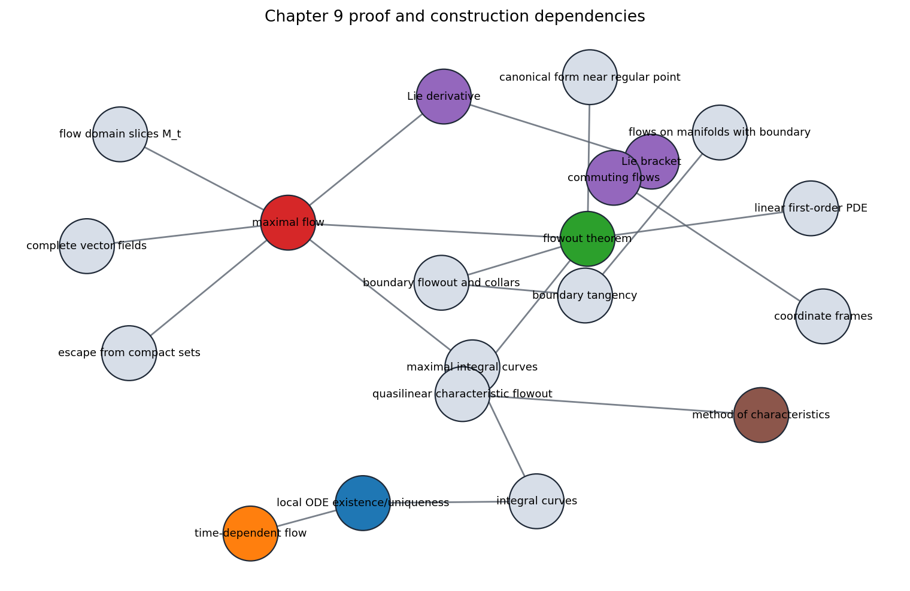
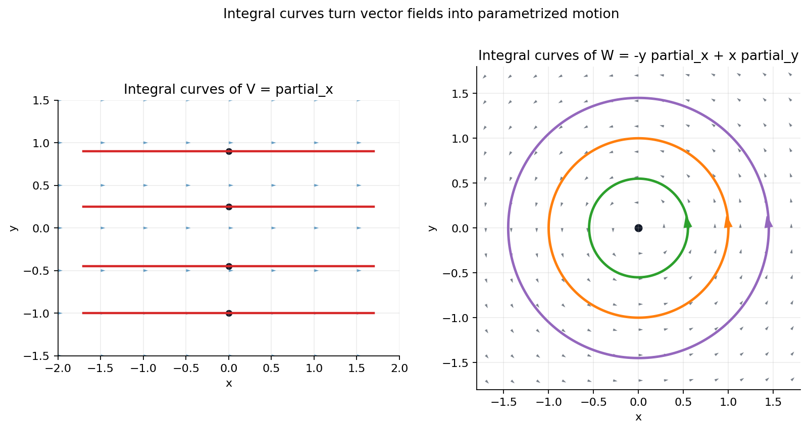
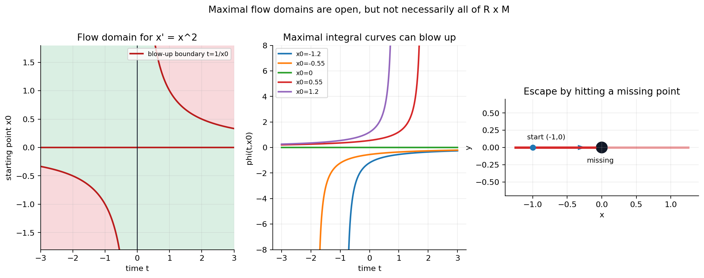
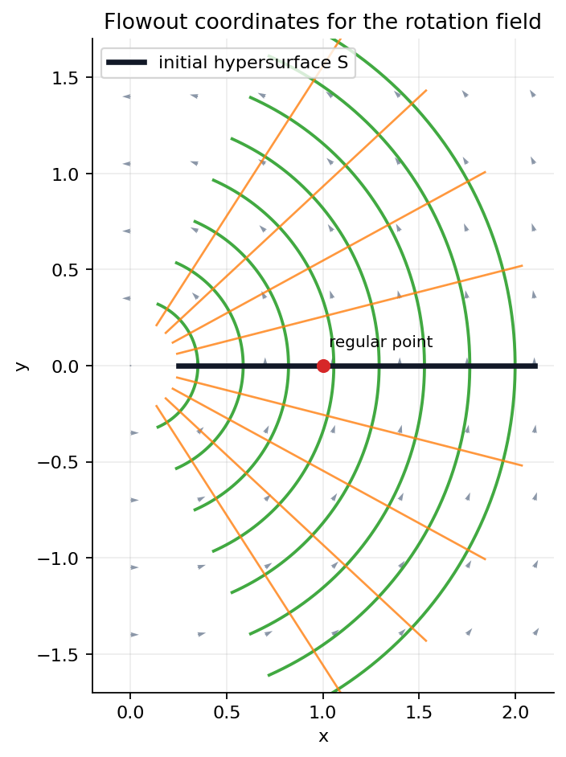
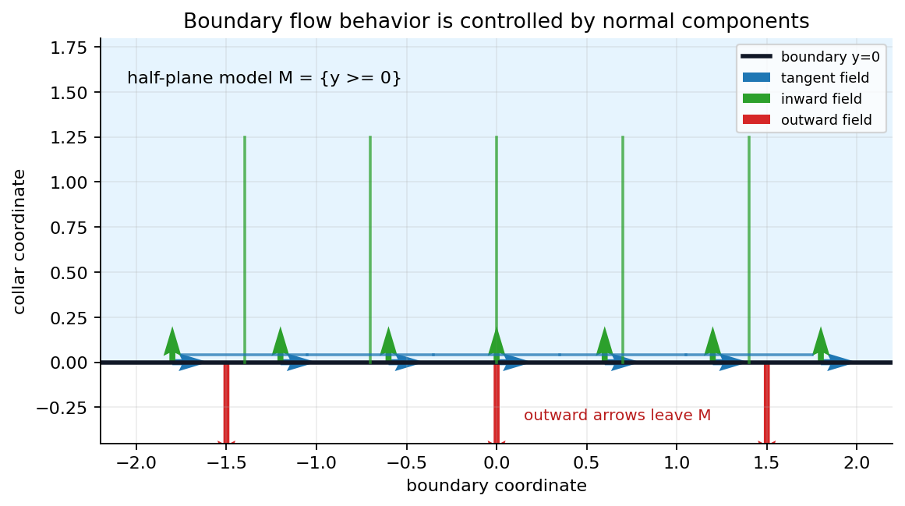
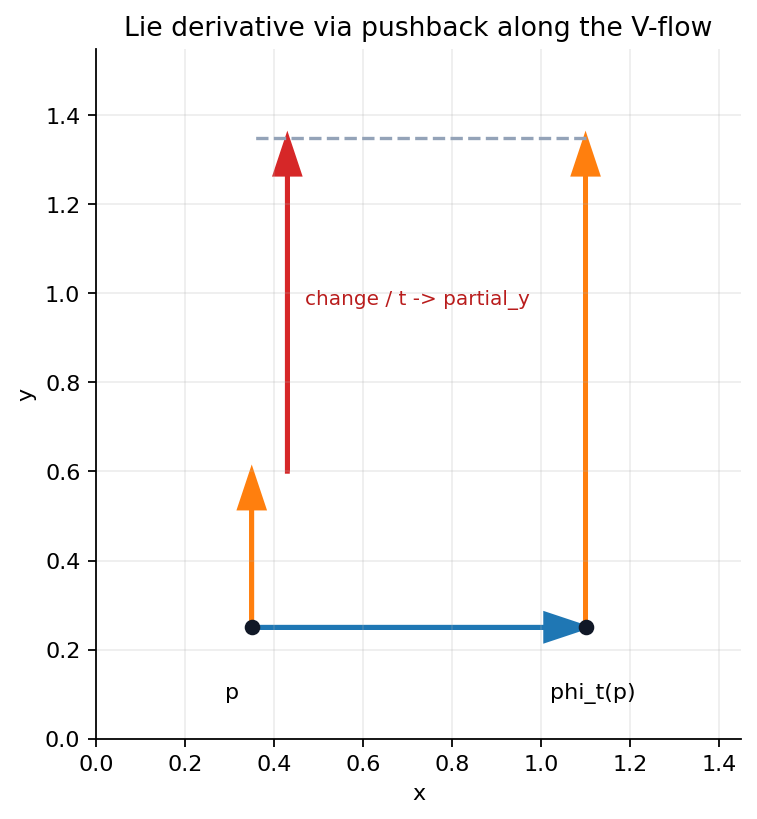
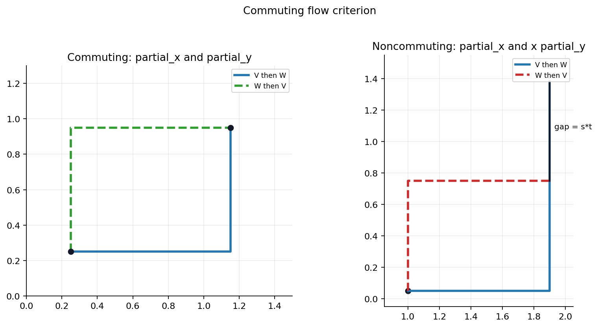
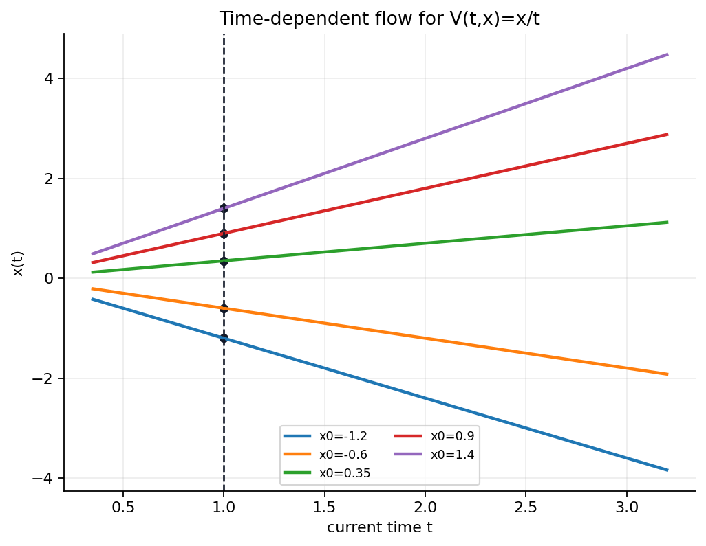
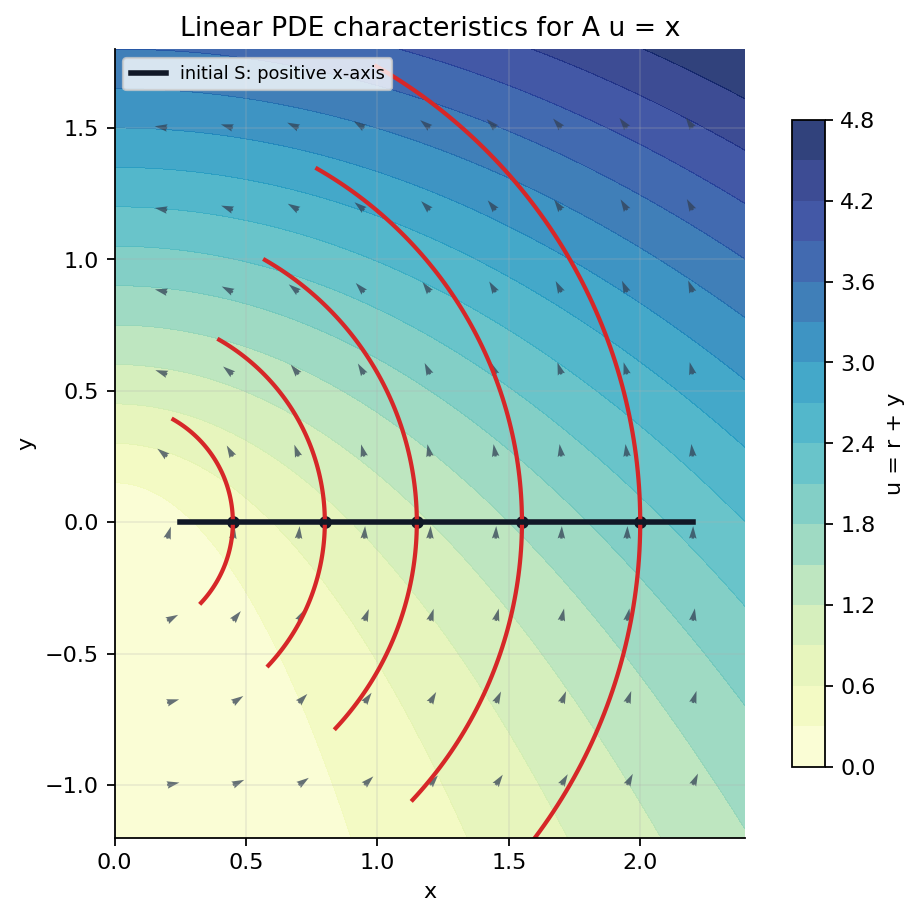

From local ODE solutions to geometry carried by motion
The chapter turns vector fields into flows, then uses those flows to build coordinates, test brackets, handle boundaries, and solve first-order PDEs.

Integral Curves: Velocity Is The Field Value

A smooth curve gamma:J -> M is an integral curve of V when every chart sees the ODE
Integral curves are not drawn as arbitrary streamlines: the residual check verifies the defining equation.
Maximal Flow Domains Are Open, Not Usually Rectangular

The maximal integral curves assemble into Phi:D -> M, where D is open in R x M, Phi(0,p)=p, and the flow law holds whenever both sides are defined.
For x' = x^2, the domain inequality is 1 - t x_0 > 0. The notebook checks both the flow law residual and the inverse residual as zero.
Flowouts Turn A Transverse Slice Into Coordinates

Given an initial submanifold S, define F(t,s)=Phi_t(s). If the vector field is transverse to S, the flowout becomes a local coordinate map.
The determinant is nonzero for positive s, and the pushforward check partial_t F - W = 0 verifies the coordinate direction.
- Time is one coordinate.
- The initial slice supplies the remaining coordinates.
- Near a regular point, the field becomes a coordinate vector field.
At A Boundary, The Normal Component Decides What The Flow Can Do

In the half-plane model M={y >= 0}, the inward normal is n=(0,1). The sign of V dot n separates tangent, inward, and outward behavior.
The Lie Derivative Uses Pullback Before Differentiating

Move by the V-flow, pull the nearby W vector back to the original point, and differentiate that comparison at time zero.
Two Local Motions Commute Exactly When The Bracket Vanishes

Where both compositions are defined, the V-then-W square closes locally exactly when [V,W]=0.
partial_x and partial_y give bracket (0,0). Replacing partial_y by x partial_y gives bracket (0,1) and endpoint gap (0,st).
An Evolution Map Needs Both Start Time And End Time

For V(t,x)=x/t, the solution depends on the initial clock reading as well as the final clock reading.
The notebook verifies the two-time composition law with residual zero.
First-Order PDEs Become Flowout Problems

A first-order Cauchy problem asks for a graph swept out by the vector field determined by the PDE. Noncharacteristic initial data makes the projection locally regular.
The checked local solution is u=sqrt(x^2+y^2)+y, with PDE residual zero and noncharacteristic determinant s_pos.
The graph-flowout solution is u=(x-y)/(1+y), valid where y>-1; the projection Jacobian is -t-1.
What The Chapter Adds To The Manifold Toolkit
- Integral curves are local ODE solutions with a geometric invariant: velocity equals field value.
- Maximal flows assemble those curves, but domains can shrink through blow-up or escape.
- Flowouts supply canonical coordinates, collars, and characteristic surfaces.
- Lie brackets measure the first obstruction to commuting flows.
Use the notebook perturbation cells to vary the starting slice, change a boundary normal component, and compare commuting versus noncommuting flow squares.